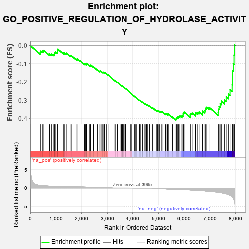
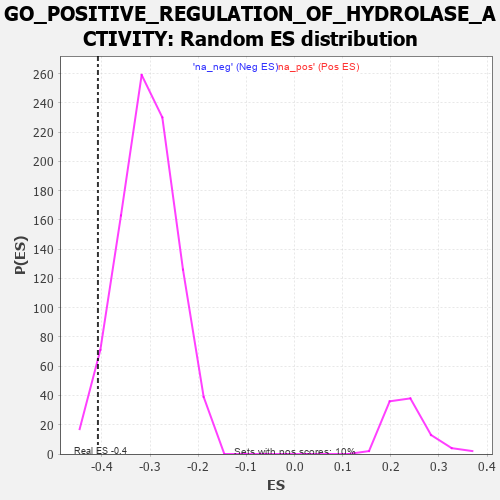

| | | Dataset | 7d |
| Phenotype | NoPhenotypeAvailable |
| Upregulated in class | na_neg |
| GeneSet | GO_POSITIVE_REGULATION_OF_HYDROLASE_ACTIVITY |
| Enrichment Score (ES) | -0.408393 |
| Normalized Enrichment Score (NES) | -1.333004 |
| Nominal p-value | 0.03314917 |
| FDR q-value | 0.43203428 |
| FWER p-Value | 1.0 |
Table: GSEA Results Summary

Fig 1: Enrichment plot: GO_POSITIVE_REGULATION_OF_HYDROLASE_ACTIVITY
Profile of the Running ES Score & Positions of GeneSet Members on the Rank Ordered List
| PROBE | GENE SYMBOL | GENE_TITLE | RANK IN GENE LIST | RANK METRIC SCORE | RUNNING ES | CORE ENRICHMENT | | 1 | BAX | | | 387 | 0.711 | -0.0386 | No |
| 2 | OCRL | | | 408 | 0.691 | -0.0307 | No |
| 3 | WRN | | | 469 | 0.649 | -0.0285 | No |
| 4 | HTRA2 | | | 527 | 0.621 | -0.0264 | No |
| 5 | AHSA1 | | | 747 | 0.546 | -0.0461 | No |
| 6 | TCEA1 | | | 821 | 0.526 | -0.0475 | No |
| 7 | HMGB2 | | | 892 | 0.507 | -0.0487 | No |
| 8 | PTPA | | | 947 | 0.497 | -0.0481 | No |
| 9 | ADRM1 | | | 948 | 0.496 | -0.0406 | No |
| 10 | DVL3 | | | 971 | 0.490 | -0.0360 | No |
| 11 | AKT1 | | | 1040 | 0.476 | -0.0375 | No |
| 12 | MEF2C | | | 1054 | 0.473 | -0.0320 | No |
| 13 | FZD10 | | | 1065 | 0.470 | -0.0262 | No |
| 14 | AIFM1 | | | 1072 | 0.469 | -0.0198 | No |
| 15 | GIT2 | | | 1285 | 0.432 | -0.0403 | No |
| 16 | TBCD | | | 1338 | 0.422 | -0.0406 | No |
| 17 | DOCK7 | | | 1398 | 0.410 | -0.0419 | No |
| 18 | SOS1 | | | 1547 | 0.384 | -0.0550 | No |
| 19 | NPRL3 | | | 1592 | 0.375 | -0.0549 | No |
| 20 | ABR | | | 1812 | 0.335 | -0.0778 | No |
| 21 | MSH2 | | | 1819 | 0.334 | -0.0735 | No |
| 22 | HACD3 | | | 1932 | 0.315 | -0.0830 | No |
| 23 | GMIP | | | 2108 | 0.290 | -0.1010 | No |
| 24 | PSME4 | | | 2143 | 0.285 | -0.1010 | No |
| 25 | NPRL2 | | | 2184 | 0.278 | -0.1019 | No |
| 26 | SYK | | | 2186 | 0.278 | -0.0978 | No |
| 27 | REST | | | 2308 | 0.259 | -0.1093 | No |
| 28 | DOCK8 | | | 2341 | 0.254 | -0.1096 | No |
| 29 | BCAS3 | | | 2352 | 0.253 | -0.1070 | No |
| 30 | PGAM5 | | | 2457 | 0.235 | -0.1167 | No |
| 31 | VAV3 | | | 2614 | 0.210 | -0.1334 | No |
| 32 | AGAP4 | | | 2705 | 0.198 | -0.1419 | No |
| 33 | PHB2 | | | 2712 | 0.197 | -0.1397 | No |
| 34 | FNTA | | | 2755 | 0.190 | -0.1422 | No |
| 35 | ASAP2 | | | 2815 | 0.181 | -0.1470 | No |
| 36 | RIC8A | | | 2833 | 0.179 | -0.1464 | No |
| 37 | PDCD5 | | | 2885 | 0.169 | -0.1504 | No |
| 38 | FGFR2 | | | 2895 | 0.167 | -0.1490 | No |
| 39 | MTCH1 | | | 2966 | 0.155 | -0.1556 | No |
| 40 | WNT4 | | | 3023 | 0.146 | -0.1605 | No |
| 41 | ACAP1 | | | 3288 | 0.107 | -0.1926 | No |
| 42 | SMAD3 | | | 3303 | 0.105 | -0.1928 | No |
| 43 | DDX3X | | | 3388 | 0.091 | -0.2021 | No |
| 44 | RGS8 | | | 3490 | 0.079 | -0.2138 | No |
| 45 | PIN1 | | | 3543 | 0.069 | -0.2194 | No |
| 46 | RSU1 | | | 3585 | 0.062 | -0.2237 | No |
| 47 | MAPK3 | | | 3589 | 0.062 | -0.2231 | No |
| 48 | RIC1 | | | 3627 | 0.055 | -0.2270 | No |
| 49 | FIS1 | | | 3654 | 0.051 | -0.2296 | No |
| 50 | DHX9 | | | 3693 | 0.044 | -0.2337 | No |
| 51 | NF1 | | | 3713 | 0.040 | -0.2356 | No |
| 52 | HSF1 | | | 3718 | 0.039 | -0.2355 | No |
| 53 | SGSM1 | | | 3907 | 0.009 | -0.2593 | No |
| 54 | EVI5 | | | 3960 | 0.001 | -0.2659 | No |
| 55 | SFRP2 | | | 4065 | -0.018 | -0.2789 | No |
| 56 | MTOR | | | 4114 | -0.025 | -0.2847 | No |
| 57 | MSH6 | | | 4129 | -0.028 | -0.2860 | No |
| 58 | CRK | | | 4139 | -0.031 | -0.2867 | No |
| 59 | AGAP3 | | | 4251 | -0.050 | -0.3001 | No |
| 60 | ADAP1 | | | 4261 | -0.052 | -0.3005 | No |
| 61 | PSME3 | | | 4280 | -0.056 | -0.3019 | No |
| 62 | WNT11 | | | 4282 | -0.056 | -0.3012 | No |
| 63 | RGS3 | | | 4293 | -0.059 | -0.3016 | No |
| 64 | ARF4 | | | 4383 | -0.073 | -0.3118 | No |
| 65 | MTMR9 | | | 4387 | -0.074 | -0.3111 | No |
| 66 | LRRK2 | | | 4467 | -0.087 | -0.3199 | No |
| 67 | HIP1 | | | 4485 | -0.092 | -0.3206 | No |
| 68 | RIN2 | | | 4535 | -0.101 | -0.3253 | No |
| 69 | NTRK2 | | | 4543 | -0.104 | -0.3247 | No |
| 70 | RGS6 | | | 4559 | -0.107 | -0.3250 | No |
| 71 | RGS7 | | | 4565 | -0.108 | -0.3240 | No |
| 72 | NMUR2 | | | 4646 | -0.127 | -0.3322 | No |
| 73 | FGFR3 | | | 4656 | -0.129 | -0.3314 | No |
| 74 | FBLN1 | | | 4748 | -0.149 | -0.3408 | No |
| 75 | PLCG1 | | | 4770 | -0.151 | -0.3412 | No |
| 76 | CASP1 | | | 4932 | -0.185 | -0.3589 | No |
| 77 | TBCK | | | 4937 | -0.186 | -0.3566 | No |
| 78 | ARAP1 | | | 4963 | -0.191 | -0.3569 | No |
| 79 | RIN3 | | | 5010 | -0.199 | -0.3598 | No |
| 80 | PDPK1 | | | 5043 | -0.207 | -0.3607 | No |
| 81 | DDX11 | | | 5102 | -0.225 | -0.3647 | No |
| 82 | SMAP2 | | | 5105 | -0.226 | -0.3616 | No |
| 83 | FLCN | | | 5140 | -0.235 | -0.3624 | No |
| 84 | EPHA4 | | | 5273 | -0.265 | -0.3752 | No |
| 85 | MAGI2 | | | 5295 | -0.269 | -0.3738 | No |
| 86 | EPHA1 | | | 5349 | -0.285 | -0.3762 | No |
| 87 | GRIN1 | | | 5381 | -0.291 | -0.3758 | No |
| 88 | FGFR1 | | | 5543 | -0.332 | -0.3913 | No |
| 89 | CASP8 | | | 5678 | -0.369 | -0.4028 | Yes |
| 90 | MTCL1 | | | 5697 | -0.374 | -0.3995 | Yes |
| 91 | CLPX | | | 5717 | -0.381 | -0.3961 | Yes |
| 92 | DAP | | | 5732 | -0.386 | -0.3921 | Yes |
| 93 | GRTP1 | | | 5780 | -0.400 | -0.3920 | Yes |
| 94 | SNX13 | | | 5801 | -0.406 | -0.3884 | Yes |
| 95 | RGS5 | | | 5831 | -0.414 | -0.3859 | Yes |
| 96 | DOCK1 | | | 5908 | -0.438 | -0.3889 | Yes |
| 97 | RAB4A | | | 5919 | -0.441 | -0.3836 | Yes |
| 98 | AGFG1 | | | 5955 | -0.457 | -0.3811 | Yes |
| 99 | SGSM3 | | | 5957 | -0.457 | -0.3743 | Yes |
| 100 | TTBK1 | | | 5969 | -0.460 | -0.3688 | Yes |
| 101 | RGS20 | | | 5995 | -0.471 | -0.3648 | Yes |
| 102 | TPM1 | | | 6226 | -0.545 | -0.3859 | Yes |
| 103 | RGN | | | 6233 | -0.547 | -0.3784 | Yes |
| 104 | TFAP4 | | | 6254 | -0.556 | -0.3726 | Yes |
| 105 | IFT57 | | | 6307 | -0.579 | -0.3705 | Yes |
| 106 | MALT1 | | | 6432 | -0.634 | -0.3767 | Yes |
| 107 | ARL1 | | | 6438 | -0.636 | -0.3677 | Yes |
| 108 | PLIN5 | | | 6524 | -0.672 | -0.3684 | Yes |
| 109 | ROBO1 | | | 6577 | -0.699 | -0.3645 | Yes |
| 110 | EGFR | | | 6708 | -0.765 | -0.3695 | Yes |
| 111 | GSK3B | | | 6719 | -0.768 | -0.3592 | Yes |
| 112 | NET1 | | | 6803 | -0.816 | -0.3574 | Yes |
| 113 | NMUR1 | | | 6821 | -0.828 | -0.3471 | Yes |
| 114 | RGS17 | | | 6853 | -0.843 | -0.3383 | Yes |
| 115 | DNM1L | | | 6963 | -0.913 | -0.3384 | Yes |
| 116 | GRN | | | 7319 | -1.194 | -0.3656 | Yes |
| 117 | NGEF | | | 7335 | -1.209 | -0.3492 | Yes |
| 118 | WDR35 | | | 7357 | -1.225 | -0.3334 | Yes |
| 119 | ARAP2 | | | 7397 | -1.261 | -0.3193 | Yes |
| 120 | CASP2 | | | 7442 | -1.322 | -0.3049 | Yes |
| 121 | CALM1 | | | 7567 | -1.499 | -0.2981 | Yes |
| 122 | PDCD6 | | | 7630 | -1.615 | -0.2816 | Yes |
| 123 | BOK | | | 7715 | -1.817 | -0.2648 | Yes |
| 124 | ST18 | | | 7780 | -2.007 | -0.2426 | Yes |
| 125 | TRAF2 | | | 7861 | -2.481 | -0.2153 | Yes |
| 126 | CALM3 | | | 7869 | -2.525 | -0.1781 | Yes |
| 127 | FYN | | | 7881 | -2.622 | -0.1398 | Yes |
| 128 | PLCB1 | | | 7904 | -2.841 | -0.0997 | Yes |
| 129 | ARRB1 | | | 7935 | -3.377 | -0.0525 | Yes |
| 130 | DAPK1 | | | 7950 | -3.767 | 0.0027 | Yes |
Table: GSEA details [plain text format]

Fig 2: GO_POSITIVE_REGULATION_OF_HYDROLASE_ACTIVITY: Random ES distribution
Gene set null distribution of ES for GO_POSITIVE_REGULATION_OF_HYDROLASE_ACTIVITY